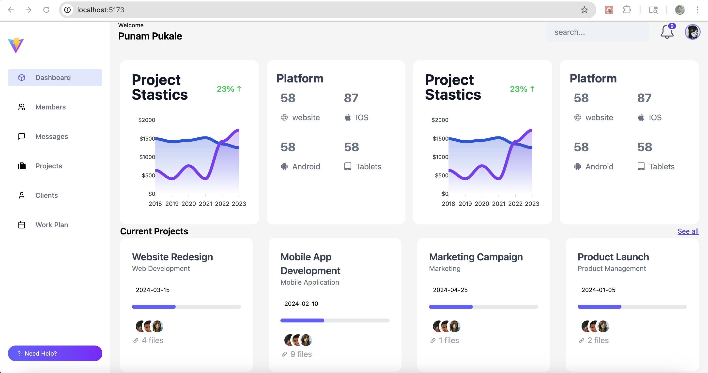
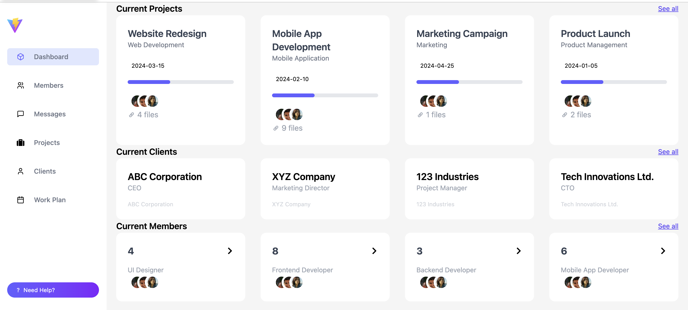

React Admin Dashboard for Project & Team Management
GitHub Code
1. Project Overview
This responsive admin dashboard is built using React, Vite, and Tailwind CSS. It offers a modern, intuitive UI for managing business data, including project stats, team roles, clients, and platform distribution. It simulates a real-world SaaS admin panel suitable for project managers, developers, and team leads.
It features a clean, modular architecture with reusable components and clear data organization. The dashboard layout ensures easy scalability, making it perfect for larger enterprise applications and internal tools. The user experience focuses on accessibility, responsiveness, and clarity, following modern UI/UX principles.
2. Key Features
- Sidebar Navigation: Vertical sidebar with intuitive icons for sections like Dashboard, Members, Messages, Projects, Clients, and Work Plan.
- Top Navigation: Includes search functionality, user profile avatar, and live notification icon.
- Project Analytics: Graphs and statistical data visualizing project performance and growth.
- Platform Breakdown: Device-specific platform usage (Web, iOS, Android, Tablets).
- Project Cards: Visual cards displaying project info, progress bars, team members, and file attachments.
- Client List: Cards for client organizations with roles and affiliations.
- Team Overview: Role-wise categorization of team members (UI, Frontend, Backend, Mobile).
- Animated Charts: Interactive chart animations for improved data visualization.
- Responsive Design: Fully mobile-friendly layout using Tailwind's responsive utility classes.
- Code Splitting: Utilizes React Router’s outlet component for page-level splitting.
3. Technologies Used
- Frontend: React, React Router
- Styling: Tailwind CSS
- Icons: react-icons
- Data Visuals: Custom SVG/graph components
- Build Tool: Vite (lightning-fast development and hot reload)


4. Why This Project Stands Out
- Implements a real-world admin layout that demonstrates strong UI/UX principles.
- Highly modular and scalable codebase using component-driven development.
- Mobile-first and responsive, ensuring accessibility across devices.
- Clean aesthetics powered by Tailwind CSS for rapid development.
- Uses visual hierarchy, consistent spacing, and animations to enhance interactivity and engagement.
- Perfect foundation for developing enterprise SaaS dashboards, CMS systems, or internal analytics tools.
5. Deployment
← Back to Portfolio
This project can be easily deployed on platforms like Render, Vercel, or Netlify using the Vite build output located in the dist folder. Deployment instructions include setting the build command as npm run build and publish directory as dist.
A live preview URL can be used to demonstrate the dashboard in real-time. This makes it easy to share the application with clients, collaborators, or during job interviews as a portfolio piece.
← Back to Portfolio